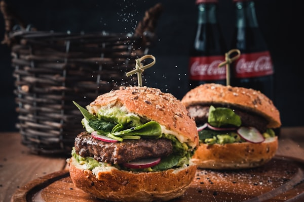
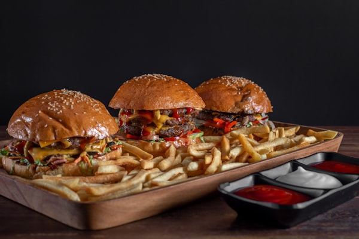

A decadent burger loading a crispy potato patty and melted cheddar cheese with a rich soy granule chili sauce.
A clean, protein-packed vegan burger with a grilled mixed bean and tofu patty, fresh lettuce, and tomato.
A low-carb, nutrient-rich stack of grilled black bean patty, pineapple, beetroot, avocado, and fresh greens.

A classic fusion favorite featuring a crispy spiced aloo tikki patty and melted cheese spread in a toasted bun.
A fun open-faced burger showcasing a breaded potato-peas-carrot patty topped with garlic mayonnaise and crispy bhujia.
A unique, aromatic burger infused with Chinese five-spice powder, soy sauce, and melted cheese on a bean patty.
A crispy street-style chop patty stuffed with beets, carrots, and peas, layered with lettuce and burger mayonnaise.
A fiery sautéed button mushroom stir-fry burger with spicy chili sauce and a creamy coleslaw layer.
A zestful minced chicken patty burger seasoned with jalapenos and cilantro, topped with tomato salsa and sour cream.

A wholesome homemade black bean patty burger seasoned with mint and paprika on a whole wheat sandwich bun.
No matching burger recipes found! Try searching for another keyword or change your filter.